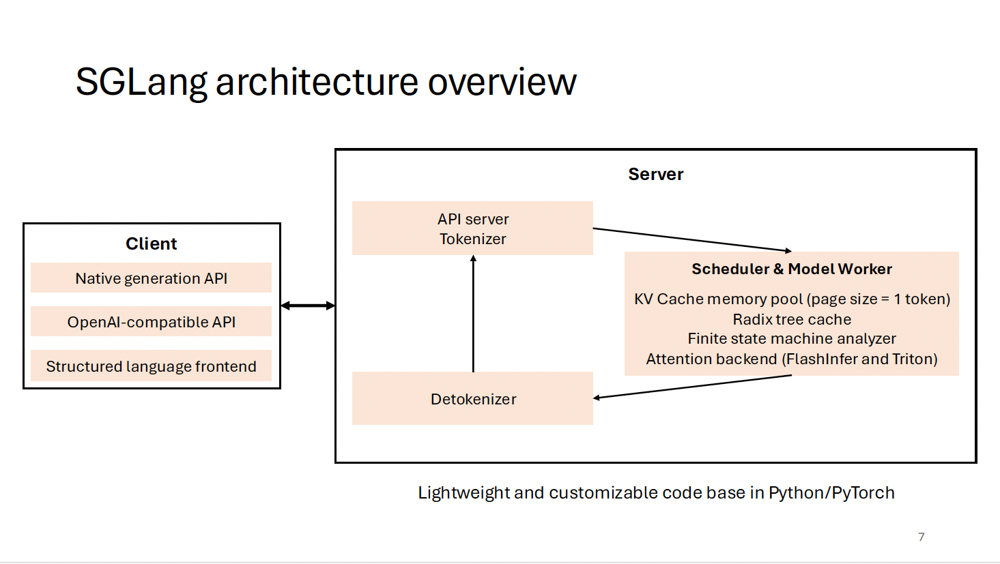
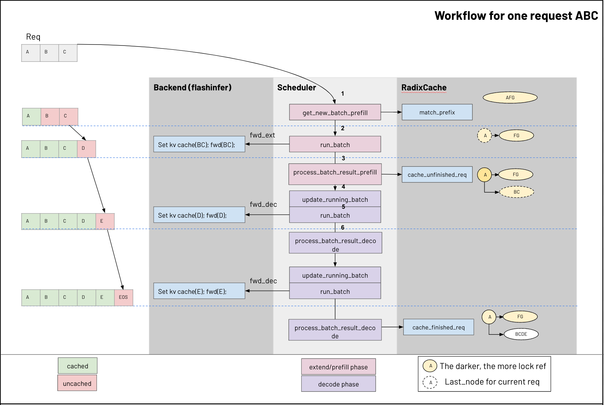
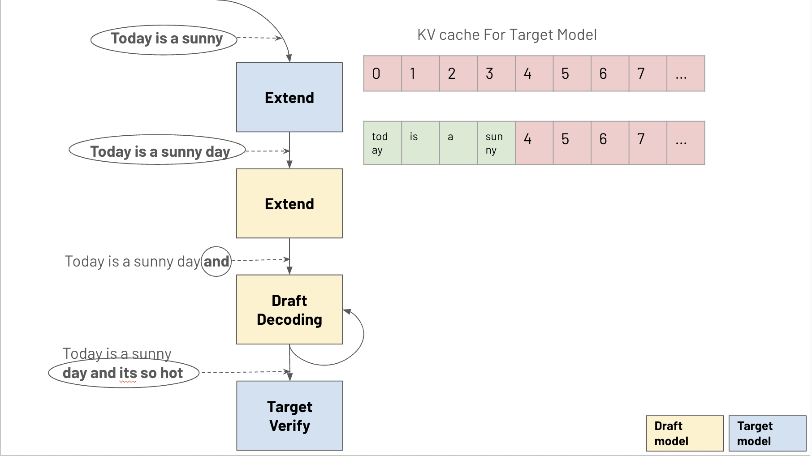

KV Cache 内存公式：
memory = 2 (K+V) * num_layers * num_kv_heads * head_dim * seq_len * bytes_per_element
注意 GQA 中 KV heads 数量远小于 Q heads。
SGLang 深度解析 - 从请求到生成的完整链路

一个 LLM 推理请求从用户输入到最终输出，需要经历多个阶段。在 SGLang 中，这个过程被精心设计为一个高效的 pipeline：
| 阶段 | 操作 | 瓶颈 | SGLang 优化 |
|---|---|---|---|
Tokenize |
将用户输入文本转换为 token ID 序列 | CPU 密集 | 异步 tokenization，与 GPU 计算重叠 |
Schedule |
将请求分配到 batch slot，管理优先级 | 调度延迟 | Continuous Batching + 优先级队列 |
Prefill |
并行处理所有 prompt tokens，填充 KV Cache | Compute bound | Chunked Prefill，Radix Cache 复用 |
Decode |
自回归逐 token 生成 | Memory bandwidth | PageAttention，高效 KV Cache 访问 |
Detokenize |
将生成的 token IDs 转换回文本 | CPU 密集 | 增量 detokenization + streaming |
Prefill 阶段是 compute-bound计算量大，GPU 计算单元是瓶颈：所有 prompt tokens 可以并行计算 attention，矩阵运算密集。
Decode 阶段是 memory-bandwidth-bound需要频繁读取 KV Cache，显存带宽是瓶颈：每步只生成一个 token，但需要读取完整的 KV Cache。
// Prefill: 并行处理 N 个 tokens
// FLOPs ≈ 2 * N * d_model^2 * num_layers (compute bound)
attention_output = softmax(Q @ K.T / sqrt(d)) @ V // Q: [N, d], K: [N, d]
// Decode: 每次只处理 1 个 token
// Memory reads ≈ 2 * seq_len * d_model * num_layers (memory bound)
attention_output = softmax(q @ K_cache.T / sqrt(d)) @ V_cache // q: [1, d], K: [seq, d]| 指标 | 全称 | 含义 | 决定因素 |
|---|---|---|---|
| TTFT | Time To First Token | 用户发出请求到第一个 token 出现的延迟 | Prefill 速度 + 排队时间 |
| TPOT | Time Per Output Token | 后续每个 token 的生成间隔 (用户感知的 "打字速度") | Decode 速度 |
用户体验: 1000 / TPOT = tokens/sec。TPOT=50ms → 20 tok/s (流畅), TPOT=200ms → 5 tok/s (卡顿)。
Prefill 是 compute-bound, 速度由 GPU 算力 / 每 token 计算量 决定:
# 核心公式:
prefill_speed = GPU_FLOPS × MFU / FLOPs_per_token
# Step 1: 每 token 的 FLOPs ≈ 2 × model_params
# 为什么 2×? 矩阵乘 y=x@W (W有P参数) = P次乘法 + P次加法 = 2P FLOPs
# 模型 forward = 过一遍所有权重矩阵, 所以 FLOPs/token ≈ 2 × total_params
# Step 2: GPU 实际算力 = 峰值 × MFU (Model FLOPs Utilization)
# Prefill 是大矩阵乘, MFU 较高: 50-70%
# H100 BF16 峰值 989 TFLOPS, 实际 ~500-700 TFLOPS
# Step 3: 相除
# 7B on H100 BF16, MFU=60%:
# = 989 × 0.6 TFLOPS / (2 × 7 GFLOP/token)
# = 593 TFLOPS / 14 GFLOP = ~42K tokens/sec# prefill_speed ≈ 300,000 / B (tokens/sec, 单卡)
#
# 7B → ~42K tok/s
# 13B → ~23K tok/s
# 70B → ~4.3K tok/s (单卡; TP=8 → ~30K tok/s)
# 405B → ~740 tok/s (单卡; TP=8 → ~5K tok/s)Decode 时每个权重只被 1 个 token 用一次, 瓶颈在 读数据的速度。每生成一个 token 需要从 HBM 读取:
# 完整公式: 每 token 需要读的总数据量
bytes_per_token = model_weights + kv_cache_read
# ↑ 固定 (每次都要读完整模型) ↑ 随 seq_len 增长!
# TPOT = bytes_per_token / memory_bandwidth
# Decode throughput = memory_bandwidth / bytes_per_token# LLaMA-70B GQA, seq_len=2048 on 2×A100-80GB (TP=2):
model_weights = 140 # GB (BF16), TP=2 → 每卡读 70 GB
kv_cache = 80 * 8 * 128 * 2048 * 2 * 2 / 1e9 # = 0.67 GB (GQA 只有 8 KV heads)
# KV cache 只占 0.5% → 可忽略
# TP=2: 两卡并行, 每卡独立读自己的 70 GB 权重
# A100 带宽 2.0 TB/s:
# 理论 TPOT = 70 GB / 2.0 TB/s = 35 ms
# + TP AllReduce (80层×2次) + kernel launch overhead ≈ +15ms
# 实测: ~53.8 ms (Cursor blog, bs=1)
# → MBU = 35/53.8 ≈ 65% (合理: AllReduce + launch 吃掉了 35% 的时间)# 关键: KV cache 大小 = 2 × layers × kv_heads × head_dim × seq_len × 2
# 它随 seq_len 线性增长!
# 小模型 + MHA + 长序列: KV cache 可能比模型还大
# LLaMA-7B (MHA, 32 KV heads), seq_len=32768:
model_weights = 14 # GB
kv_cache = 32 * 32 * 128 * 32768 * 2 * 2 / 1e9 # = 16.8 GB (!)
# KV cache 比模型还大! TPOT 翻倍:
# (14 + 16.8) / 3350 = 9.2 ms (vs 无 KV 的 4.2ms)
# 大模型 + GQA + 短序列: KV cache 微不足道
# LLaMA-70B (GQA, 8 KV heads), seq_len=4096:
# KV = 80×8×128×4096×2×2 / 1e9 = 1.3 GB vs 140 GB model → ~1%| 场景 | Model Size | KV Cache | KV 占比 | TPOT 影响 |
|---|---|---|---|---|
| 70B + GQA + 4K seq | 140 GB | 1.3 GB | 1% | 可忽略 |
| 7B + MHA + 4K seq | 14 GB | 2.1 GB | 13% | 轻微 |
| 7B + MHA + 32K seq | 14 GB | 16.8 GB | 55% | TPOT 翻倍! |
| 7B + MHA + 128K seq | 14 GB | 67 GB | 83% | 完全主导 |
| 70B + GQA + 128K seq | 140 GB | 41 GB | 23% | 不可忽略 |
结论: GQA/MLA 不仅省显存, 更重要的是省带宽 — 减少每次 decode 需要读取的 KV cache 量, 直接降低 TPOT。
| 模型 | GPU | 理论 TPOT | 实测 TPOT | MBU | 来源 |
|---|---|---|---|---|---|
| LLaMA-7B (BF16) | 1×A100 80GB | 7.2 ms | 9.3 ms (bs=4) | ~77% | HuggingFace TGI |
| LLaMA-70B (BF16) | 2×A100 80GB | 36 ms | 53.8 ms (bs=1) | ~67% | Cursor blog |
| LLaMA-70B (BF16) | H100 (推算) | 21 ms | ~35 ms | ~60% | Databricks (H100 比 A100 快 36%) |
MBU (Model Bandwidth Utilization) = 理论 TPOT / 实测 TPOT。实际 60-80% 是正常的, 因为还有 kernel launch overhead、AllReduce (TP)、attention 计算等非权重读取的开销。
# 权重从 HBM 读一次, 被 batch 中的 B 个 token 共享:
# Arithmetic Intensity = 2B (B个token每个做2次运算/读一次权重)
# 当 B 增大, 从 memory-bound 逐渐变成 compute-bound
#
# 临界 batch size (compute 与 memory 平衡):
# B_critical = FLOPS / (Bandwidth × 2) = 989e12 / (3.35e12 × 2) ≈ 148
#
# B < 148: memory-bound, 增大 batch → 吞吐线性增长, TPOT 不变
# B > 148: compute-bound, 增大 batch → TPOT 开始增长
#
# 实测验证 (Cursor blog, LLaMA-70B on 2×A100):
# bs=1: 18.6 tok/s ← memory-bound
# bs=8: 17.2 tok/s ← 仍然 memory-bound (每请求 TPOT 不变)
# bs=32: 12.4 tok/s ← 开始 saturate
#
# LLM-Viewer 论文 (arXiv 2402.16363) 证实:
# "在 decode 阶段, 所有计算层的 arithmetic intensity ≈ 1 OPs/byte,
# firmly in memory-bound region"从模型 config 推算 KV cache per token:
# 公式:
kv_per_token = 2 × n_layers × n_kv_heads × head_dim × dtype_bytes
# ↑ ↑ ↑ ↑ ↑
# K+V 层数 KV heads数 每head维度 BF16=2
# 速算: kv_per_token = 512 × n_layers × n_kv_heads (bytes, BF16)| 模型 | 参数量 | Layers | KV Heads | Attention | KV/token (BF16) |
|---|---|---|---|---|---|
| LLaMA-7B | 7B | 32 | 32 (MHA) | MHA | 512 KB |
| LLaMA-13B | 13B | 40 | 40 (MHA) | MHA | 800 KB |
| LLaMA-70B | 70B | 80 | 8 (GQA) | GQA | 320 KB |
| LLaMA-405B | 405B | 126 | 8 (GQA) | GQA | 504 KB |
| DeepSeek-V3 | 671B | 61 | MLA | MLA (512d) | 122 KB |
# 7B → 512 KB/token (73 KB per B of params)
# 70B → 320 KB/token (4.6 KB per B of params) ← 差 16×!
#
# 原因: 大模型用 GQA (8 KV heads 共享给 64 Q heads)
# KV cache 不随 Q heads 增长, 只随 KV heads 增长
# MLA 更激进: 把 KV 压缩到低维 latent (512 vs 7168)# 70B on 2×H100 (TP=2), 模型占 70GB/卡, 剩余 10GB 给 KV cache
available_kv = 10 * 1024 # 10240 MB
kv_per_token = 0.32 # MB (320 KB, LLaMA-70B GQA)
# 如果平均 seq_len = 4096:
max_concurrent = available_kv / (kv_per_token * 4096)
# = 10240 / 1310 ≈ 7-8 个并发请求 (单卡很紧张!)
# 这就是为什么 PagedAttention 和内存管理如此重要传统的 Static Batching 会等待一个 batch 内所有请求都生成完毕后才开始处理下一个 batch，造成严重的 GPU 资源浪费。Continuous Batching 通过动态地添加和移除请求，让 GPU 始终保持高利用率。
class ContinuousBatchScheduler:
def __init__(self, max_batch_size, max_seq_len):
self.running_batch = [] # 正在处理的请求
self.waiting_queue = [] # 等待队列
self.max_batch_size = max_batch_size
self.max_seq_len = max_seq_len
self.kv_pool = KVCachePool() # KV Cache 内存池
def schedule_step(self):
# 1. 移除已完成的请求 (遇到 EOS 或达到 max_len)
finished = [r for r in self.running_batch if r.is_finished()]
for req in finished:
self.running_batch.remove(req)
self.kv_pool.free(req.kv_blocks) # 释放 KV Cache
yield_response(req)
# 2. 从等待队列中取出新请求填充空位
available_slots = self.max_batch_size - len(self.running_batch)
while available_slots > 0 and self.waiting_queue:
new_req = self.waiting_queue.pop(0)
if self.kv_pool.can_allocate(new_req.prompt_len):
new_req.kv_blocks = self.kv_pool.allocate(new_req.prompt_len)
self.running_batch.append(new_req)
available_slots -= 1
else:
self.waiting_queue.insert(0, new_req)
break # 内存不足，停止调度
# 3. 执行一个 decode step
if self.running_batch:
model_forward(self.running_batch)| 指标 | Static Batching | Continuous Batching | 提升 |
|---|---|---|---|
| GPU 利用率 | 30-50% | 85-95% | ~2x |
| Throughput (tokens/s) | 基准 | 2-3x | 显著 |
| 平均 Latency | 高 (等待最长请求) | 低 (及时释放) | 50-70%↓ |
| 尾部 Latency (P99) | 极高 | 可控 | 大幅改善 |
灵感来自操作系统的分页内存管理。PageAttention 将 KV Cache 分割成固定大小的 pages (blocks)，通过 page table 实现非连续的物理内存映射，解决了传统方法中的内存碎片问题。
class KVCachePool:
"""类似 OS 虚拟内存的 KV Cache 管理器"""
def __init__(self, num_blocks, block_size, num_layers, num_heads, head_dim):
# block_size: 每个 block 存储的 token 数 (通常 16 或 32)
self.block_size = block_size
self.num_blocks = num_blocks
# 物理内存池: [num_blocks, 2, num_layers, block_size, num_heads, head_dim]
# 2 代表 K 和 V
self.kv_pool = torch.zeros(
num_blocks, 2, num_layers, block_size, num_heads, head_dim,
dtype=torch.float16, device="cuda"
)
self.free_blocks = list(range(num_blocks)) # 空闲 block 列表
self.page_tables = {} # request_id → [block_indices]
def allocate(self, request_id, num_tokens):
# 计算需要的 block 数量 (向上取整)
num_needed = ceil_div(num_tokens, self.block_size)
if len(self.free_blocks) < num_needed:
raise MemoryError("KV Cache pool exhausted")
blocks = [self.free_blocks.pop() for _ in range(num_needed)]
self.page_tables[request_id] = blocks
return blocks
def free(self, request_id):
blocks = self.page_tables.pop(request_id)
self.free_blocks.extend(blocks)
def append_token(self, request_id, layer, k, v):
# 追加新 token 的 KV，可能需要分配新 block
blocks = self.page_tables[request_id]
current_len = self.token_counts[request_id]
block_idx = current_len // self.block_size
offset = current_len % self.block_size
if offset == 0 and block_idx == len(blocks):
# 需要新 block
new_block = self.free_blocks.pop()
blocks.append(new_block)
physical_block = blocks[block_idx]
self.kv_pool[physical_block, 0, layer, offset] = k
self.kv_pool[physical_block, 1, layer, offset] = v
SGLang 的核心创新之一。当多个请求共享相同的 system prompt 或前缀时，Radix Cache 通过树结构共享 KV Cache，避免重复计算。
class RadixCacheNode:
def __init__(self):
self.children = {} # token_id → RadixCacheNode
self.kv_indices = [] # 对应的 KV cache block indices
self.ref_count = 0 # 引用计数 (用于 eviction)
self.last_access = 0 # LRU 时间戳
class RadixCache:
def __init__(self, kv_pool):
self.root = RadixCacheNode()
self.kv_pool = kv_pool
def match_prefix(self, token_ids):
"""找到最长匹配前缀，返回 (匹配长度, KV blocks)"""
node = self.root
matched_len = 0
kv_blocks = []
for token_id in token_ids:
if token_id in node.children:
node = node.children[token_id]
node.ref_count += 1
node.last_access = current_time()
kv_blocks.extend(node.kv_indices)
matched_len += 1
else:
break
return matched_len, kv_blocks
def insert(self, token_ids, kv_blocks):
"""插入新的 KV cache 到树中"""
node = self.root
for i, token_id in enumerate(token_ids):
if token_id not in node.children:
new_node = RadixCacheNode()
new_node.kv_indices = [kv_blocks[i]]
node.children[token_id] = new_node
node = node.children[token_id]
node.ref_count += 1
def evict_lru(self, num_blocks_needed):
"""当内存不足时，按 LRU 策略驱逐"""
# 收集所有叶子节点，按 last_access 排序
leaves = self._collect_leaves(self.root)
leaves.sort(key=lambda n: n.last_access)
freed = 0
for leaf in leaves:
if leaf.ref_count == 0 and freed < num_blocks_needed:
self.kv_pool.free_blocks(leaf.kv_indices)
freed += len(leaf.kv_indices)
self._remove_node(leaf)
return freed
Prefill 和 Decode 有根本性的计算特性差异，如何在同一 GPU 上高效调度是核心挑战：
| 特性 | Prefill | Decode |
|---|---|---|
| 计算特征 | Compute-bound (大矩阵乘) | Memory-bound (读 KV Cache) |
| 延迟敏感度 | 影响 TTFT | 影响 TPOT |
| Token 数量 | 数百~数千 | 1 per step |
| GPU 利用模式 | 高计算密度 | 高带宽需求 |
class OverlapScheduler:
"""Prefill-Decode Overlap Scheduling"""
def schedule_batch(self):
# 策略: Chunked Prefill + Decode 混合
batch = MixedBatch()
# 1. 优先加入正在 decode 的请求 (保证 TPOT)
for req in self.running_decode:
batch.add_decode_request(req)
# 2. 用剩余算力做 prefill (chunked)
remaining_budget = self.compute_budget - batch.decode_flops
for req in self.waiting_prefill:
chunk_size = min(req.remaining_prefill, remaining_budget)
if chunk_size > 0:
batch.add_prefill_chunk(req, chunk_size)
remaining_budget -= chunk_size
# 3. 拥塞控制: 如果等待队列过长，限制新请求
if len(self.waiting_prefill) > self.congestion_threshold:
self.apply_backpressure()
return batchPrefill 和 decode 共享 GPU 的 SM (计算单元)。一个大 prefill kernel 提交到 GPU 后独占所有 SM 直到执行完, 后续的 decode kernel 必须排队:
# 无 chunked prefill: 32K tokens 的 prefill 占用 GPU ~1 秒
# GPU timeline:
# |<--- prefill 32K (占满所有 SM, ~1s) --->|<- decode ->|
# ↑ decode 等了 1 秒
# 用户正在打字 → 突然停顿 1 秒 → 体验极差注意: 不能用多 stream 解决 — 如果一个 kernel 已经占满所有 SM, 另一个 stream 的 kernel 虽然 submit 了也拿不到 SM。Chunked prefill 是在 kernel 边界做交替, 不是真正的并行。
# 约束: 每个 chunk 的执行时间 ≤ TPOT 预算
# chunk_time = chunk_size / prefill_speed ≤ TPOT_budget
# → max_chunk_size = prefill_speed × TPOT_budget
prefill_speed = 30000 # tokens/sec (7B on H100, from 300K/B formula)
tpot_budget = 0.050 # 50ms, decode latency SLO
max_chunk_size = prefill_speed * tpot_budget # = 1500 tokens
# 各请求切分:
# 100 tokens: 1 chunk (< 1500, 不需要切)
# 500 tokens: 1 chunk
# 2000 tokens: 2 chunks (1500 + 500)
# 8000 tokens: 6 chunks, 总 prefill 时间 = 6×50ms = 300ms
# 32000 tokens: 22 chunks, 总 prefill 时间 ≈ 1.1s
# 但 decode 每 51ms 仍然出 1 个 token!
# 实际时间线:
# [chunk 1500tok][decode 1tok][chunk 1500tok][decode 1tok]...
# 50ms ~1ms 50ms ~1ms# SJF: 短请求优先 prefill → 最小化平均等待时间
# 内存感知: 如果 KV cache 不够放这个请求, 跳过它
def schedule_prefills(waiting_queue, available_kv_memory):
# 按 prompt length 排序 (SJF)
sorted_queue = sorted(waiting_queue, key=lambda r: r.prompt_len)
for req in sorted_queue:
kv_needed = req.prompt_len * kv_per_token
if kv_needed <= available_kv_memory:
schedule(req)
available_kv_memory -= kv_needed
else:
# 放不下 → 跳过 (不阻塞后面更小的请求)
continue当 KV cache 内存不足以容纳新请求时, 需要 "踢掉" 某些正在运行的请求来腾出空间。
# 场景: 7B 模型, H100, KV cache 预算 50 GB
# 当前状态:
running_decode = 20 # 正在 decode 的请求, 平均 seq_len=2000
kv_used = 20 * 2000 * 0.5 # MB = 20 GB (0.5 MB/token for 7B MHA)
# 新请求涌入:
new_requests = [100, 500, 2000, 8000, 32000] # prompt lengths
kv_needed = sum(new_requests) * 0.5 # MB = 21.3 GB
# 当前 20 + 21.3 = 41.3 GB < 50 GB → 暂时够用
# ⚠ 但 decode 会增长! 每个 decode 请求的 seq_len 持续增加:
# 如果每个 decode 最终生成到 4096 tokens:
future_kv = 20 * 4096 * 0.5 # = 40 GB
# 加上 32000 的新请求 (16 GB) → 56 GB > 50 GB → 爆了!| 策略 | 做法 | 恢复速度 | 额外开销 |
|---|---|---|---|
| Swap to CPU | KV cache 搬到 CPU RAM | 快 (PCIe copy back) | 需要 CPU 内存 + PCIe 带宽 |
| Recompute | 丢弃 KV cache, 恢复时重新 prefill | 慢 (重算) | 无额外内存, 但浪费算力 |
| Kill | 直接终止请求 | N/A | 用户体验差 |
# 优先 preempt 32000 token 的请求:
# 1. KV cache 最大 (16 GB), 踢掉它释放最多内存
# 2. 还在 chunked prefill, 没产出任何 output → 用户感知代价低
# 3. 短请求已在 decode, preempt 它们 = 用户看到输出中断 → 体验更差
#
# SGLang/vLLM 策略:
# - LIFO preemption (后来的先被踢)
# - 优先保护已经产出 output 的请求
# - 大请求设置低优先级类似 TCP 的拥塞控制，当系统负载过高时：
Quantization 通过降低权重和/或激活的数值精度来减少模型的内存占用和计算开销。对于 LLM 推理来说，这是在有限 GPU 显存上部署大模型的关键技术。
拖动滑块切换精度级别：
| 方法 | 权重精度 | 激活精度 | 特点 |
|---|---|---|---|
| W16A16 | FP16 | FP16 | 基准，无损 |
| W8A8 (FP8) | FP8 E4M3 | FP8 E5M2 | H100 原生支持，几乎无损 |
| W4A16 (GPTQ/AWQ) | INT4 | FP16 | 权重量化，激活保持高精度 |
| W4A8 | INT4 | INT8 | 极致压缩，需要校准 |
# FP8 E4M3: 1 sign + 4 exponent + 3 mantissa (权重)
# FP8 E5M2: 1 sign + 5 exponent + 2 mantissa (梯度/激活)
# 范围: E4M3 → [-448, 448], E5M2 → [-57344, 57344]
def quantize_to_fp8(tensor, dtype="e4m3"):
# Per-tensor 或 per-channel scaling
scale = tensor.abs().max() / fp8_max(dtype)
quantized = (tensor / scale).to(torch.float8_e4m3fn)
return quantized, scale
def fp8_matmul(x_fp8, w_fp8, x_scale, w_scale):
# H100 可以直接做 FP8 矩阵乘, 吞吐是 FP16 的 2x
result = torch._scaled_mm(x_fp8, w_fp8.T,
scale_a=x_scale, scale_b=w_scale,
out_dtype=torch.bfloat16)
return result并非所有层都适合量化。通常的策略：

Speculative Decoding 的核心思想：用一个小而快的 draft model 先生成多个候选 token，然后用大的 target model 并行验证这些 token。因为验证 N 个 token 的开销与生成 1 个 token 几乎相同 (都是一次 forward pass)，所以当 acceptance rate 足够高时可以显著加速。
def speculative_decode(target_model, draft_model, prompt, gamma=5):
"""
gamma: draft 步数 (每次投机生成的 token 数)
"""
generated = []
while not is_finished(generated):
# Step 1: Draft model 快速生成 gamma 个 token
draft_tokens = []
draft_probs = []
for _ in range(gamma):
p_draft = draft_model.forward(prompt + generated + draft_tokens)
token = sample(p_draft)
draft_tokens.append(token)
draft_probs.append(p_draft)
# Step 2: Target model 并行验证所有 draft tokens
# 一次 forward pass 验证所有位置!
target_probs = target_model.forward_batch(
prompt + generated + draft_tokens # 并行处理 gamma 个位置
)
# Step 3: 逐个验证，使用 rejection sampling
accepted = 0
for i in range(gamma):
# 接受概率: min(1, p_target / p_draft)
accept_prob = min(1.0, target_probs[i][draft_tokens[i]] /
draft_probs[i][draft_tokens[i]])
if random() < accept_prob:
generated.append(draft_tokens[i])
accepted += 1
else:
# 拒绝: 从修正分布中采样
adjusted_dist = normalize(
max(0, target_probs[i] - draft_probs[i])
)
generated.append(sample(adjusted_dist))
break # 后续 draft tokens 作废
else:
# 所有 draft tokens 都被接受，bonus: 再采样一个
bonus_token = sample(target_probs[gamma])
generated.append(bonus_token)
return generated设 acceptance rate 为 α，draft 步数为 γ，draft model 速度为 target 的 c 倍：
# 期望接受的 token 数: E[accepted] = (1 - α^(γ+1)) / (1 - α)
# 每轮开销: γ * cost_draft + 1 * cost_target
# 加速比 ≈ E[accepted] / (γ * c + 1)
# 例: α=0.8, γ=5, c=0.1 (draft 是 target 的 10 倍快)
# E[accepted] = (1 - 0.8^6) / (1 - 0.8) = 3.36 tokens
# 开销 = 5 * 0.1 + 1 = 1.5 (相对 target 单步)
# 加速比 = 3.36 / 1.5 = 2.24x在实际应用中，我们经常需要 LLM 生成符合特定格式的输出（如 JSON、SQL、代码等）。Constraint Decoding 通过在解码过程中动态屏蔽不合法的 token，保证输出始终符合给定的语法规则。
class JSONConstraintDecoder:
"""基于 JSON Schema 的约束解码器"""
def __init__(self, schema, tokenizer):
self.schema = schema
self.tokenizer = tokenizer
# 预编译 schema 为 FSM 状态转移表
self.fsm = self.compile_schema_to_fsm(schema)
# 预计算每个状态对应的合法 token mask
self.token_masks = self.precompute_masks()
def get_valid_tokens(self, current_state):
"""返回当前状态下合法的 token IDs"""
return self.token_masks[current_state]
def apply_constraint(self, logits, state):
"""将非法 token 的 logits 设为 -inf"""
valid_mask = self.get_valid_tokens(state)
logits[~valid_mask] = float('-inf')
return logits
def decode_step(self, model, input_ids, state):
logits = model.forward(input_ids)
constrained_logits = self.apply_constraint(logits, state)
token = sample(constrained_logits)
new_state = self.fsm.transition(state, token)
return token, new_stateSGLang 将 FSM 状态转移与 Radix Cache 结合——相同约束规则下的前缀可以共享 FSM 状态和 token mask 计算结果，避免重复编译。此外，通过 jump-forward decoding，当 FSM 确定接下来只有一条合法路径时（如 JSON key 的引号），可以跳过模型推理直接输出。
加载一个大型模型涉及多个步骤：权重文件解析 → 权重映射 → Tensor Parallel 切分 → GPU 内存分配 → 量化转换。
class ModelLoader:
def load_model(self, model_path, tp_size, dtype="auto"):
# 1. 解析模型配置
config = load_config(model_path / "config.json")
# 2. 创建模型骨架 (空权重)
with torch.device("meta"):
model = LlamaForCausalLM(config)
# 3. 确定权重映射 (safetensors index)
weight_map = load_weight_map(model_path / "model.safetensors.index.json")
# 4. Tensor Parallel 切分计划
tp_plan = self.compute_tp_plan(config, tp_size)
# 例: {
# "q_proj.weight": ShardDim(0), # 按行切分
# "k_proj.weight": ShardDim(0), # 按行切分
# "o_proj.weight": ShardDim(1), # 按列切分
# "gate_proj.weight": ShardDim(0),
# "embed_tokens.weight": Replicate(), # 复制到所有 rank
# }
# 5. 逐 shard 加载 (流式，避免 CPU 内存爆炸)
for shard_file in weight_map.shard_files:
tensors = load_safetensors(shard_file)
for name, tensor in tensors.items():
# 按 TP plan 切分
if name in tp_plan:
tensor = self.shard_tensor(
tensor, tp_plan[name], tp_rank, tp_size
)
# 量化转换 (如 FP16 → FP8)
if dtype != "auto":
tensor = self.quantize(tensor, dtype)
# 传输到 GPU
model.load_weight(name, tensor.to("cuda"))
return model
def shard_tensor(self, tensor, plan, rank, world_size):
"""按 TP plan 切分 tensor"""
if isinstance(plan, ShardDim):
chunks = tensor.chunk(world_size, dim=plan.dim)
return chunks[rank].contiguous()
elif isinstance(plan, Replicate):
return tensor # 全量复制给定以下模型参数，计算单个请求在 sequence length = 4096 时的 KV Cache 内存占用：
num_layers = 80num_kv_heads = 8 (GQA, grouped query attention)head_dim = 128sequence_length = 4096batch_size = 32问题：(a) 单个请求的 KV Cache 大小？ (b) 整个 batch 的 KV Cache 大小？ (c) 如果 GPU 有 80GB 显存，模型权重占 140GB (2x GPU with TP=2, 每卡 70GB)，还剩多少空间给 KV Cache？最大能支持多大 batch？
KV Cache 内存公式：
memory = 2 (K+V) * num_layers * num_kv_heads * head_dim * seq_len * bytes_per_element
注意 GQA 中 KV heads 数量远小于 Q heads。
# (a) 单个请求的 KV Cache
single_request = 2 * 80 * 8 * 128 * 4096 * 2 # bytes
= 2 * 80 * 8 * 128 * 4096 * 2
= 2 * 80 * 8 * 128 * 4096 * 2
= 1,073,741,824 bytes = 1 GB
计算过程:
K 或 V 单层: 8 * 128 * 4096 * 2 = 8,388,608 bytes = 8 MB
K 和 V 单层: 8 MB * 2 = 16 MB
所有层: 16 MB * 80 = 1,280 MB ≈ 1.25 GB
更精确: 2 * 80 * 8 * 128 * 4096 * 2 = 1,342,177,280 bytes ≈ 1.25 GB
# (b) 整个 batch
batch_total = 1.25 GB * 32 = 40 GB
# (c) TP=2, 每卡 70GB 权重, 80GB 显存
available = 80 - 70 = 10 GB per GPU
# 注意: TP=2 时 KV heads 也会被分到 2 卡, 每卡 4 个 KV heads
per_request_per_gpu = 1.25 / 2 = 0.625 GB
max_batch = 10 / 0.625 = 16 个请求
# 实际中还需要预留激活内存和临时buffer, 真实可用约 7-8 GB
realistic_max_batch ≈ 12 个请求场景：你有一个 serving 系统，当前状态：
问题：(a) 你会如何安排这 5 个 prefill 请求的顺序？ (b) 是否使用 chunked prefill？chunk size 如何选择？ (c) 是否需要 preempt 某些 decode 请求？
考虑以下因素：
# (a) 排序策略: SJF (Shortest Job First) + 内存感知
# 优先处理短 prompt, 快速降低等待队列
order = [100, 500, 2000, 8000, 32000] # 按 prompt length 升序
# (b) Chunked Prefill 分析
# 7B 模型 prefill 速度 ≈ 30K tokens/s on H100
# TPOT 要求 50ms → 每个 chunk 不能超过 50ms
# max_chunk_size = 30000 * 0.05 = 1500 tokens
# 对于短请求 (100, 500): 一次 prefill 完成, 不需要 chunk
# 对于 2000: 分 2 个 chunk (1500 + 500)
# 对于 8000: 分 6 个 chunk
# 对于 32000: 分 22 个 chunk, 每个 chunk 间插入 decode step
chunk_size = 1500 # tokens, 保证 decode latency < 50ms
# (c) Preemption 分析
# KV Cache 需求:
# 当前 decode: 20 * 2000 * 0.5MB ≈ 20 GB
# 新 prefill 请求总计: (100+500+2000+8000+32000) * 0.5MB ≈ 21.3 GB
# 总需求: 20 + 21.3 = 41.3 GB < 50 GB (够用)
# 但 32000 的请求单独就需要 16 GB!
# 如果后续 decode 增长到 4096, 现有 decode 请求会需要:
# 20 * 4096 * 0.5MB = 40 GB → 超出预算!
# 策略: 暂时不 preempt, 但为 32000 的请求设置低优先级
# 如果内存压力增大, 优先 preempt 32000 请求的 decode 阶段
# (swap to CPU 或 recompute)给定以下参数：
问题：(a) 计算期望每轮接受的 token 数 (b) 计算每轮的总延迟 (c) 计算加速比 vs 纯 target model decode (d) 如果 α 降到 0.5，加速比如何变化？值得用 speculative decoding 吗？
期望接受的 token 数 (包含最后采样的 bonus token 或修正 token):
E[tokens] = (1 - α^(γ+1)) / (1 - α)
每轮延迟 = γ * draft_latency + 1 * target_latency (draft 是串行的，target 验证是一次 forward)
加速比 = E[tokens] * target_latency / round_latency
# (a) 期望接受 token 数
α = 0.75, γ = 5
E_tokens = (1 - 0.75**6) / (1 - 0.75)
= (1 - 0.178) / 0.25
= 0.822 / 0.25
= 3.29 tokens per round
# (b) 每轮延迟
round_latency = γ * draft_latency + 1 * target_latency
= 5 * 8ms + 1 * 50ms
= 40ms + 50ms
= 90ms
# (c) 加速比
# 纯 target: 1 token per 50ms
# Speculative: 3.29 tokens per 90ms
throughput_target = 1 / 50 = 0.02 tokens/ms
throughput_spec = 3.29 / 90 = 0.0366 tokens/ms
speedup = 0.0366 / 0.02 = 1.83x
# 或等价地: speedup = E_tokens * target_latency / round_latency
speedup = 3.29 * 50 / 90 = 1.83x
# (d) α = 0.5 的情况
E_tokens_05 = (1 - 0.5**6) / (1 - 0.5)
= (1 - 0.0156) / 0.5
= 1.97 tokens per round
speedup_05 = 1.97 * 50 / 90 = 1.09x
# α=0.5 时加速比仅 1.09x, 几乎没有收益!
# 考虑到额外的工程复杂度和 draft model 的显存开销,
# α < 0.6 时通常不值得使用 speculative decoding.
# 盈亏平衡点: speedup = 1 时
# E_tokens * 50 / 90 = 1 → E_tokens = 1.8
# (1 - α^6) / (1 - α) = 1.8
# α ≈ 0.47 (数值求解)
# 即 acceptance rate > 47% 时有加速，但实际需 > 60% 才有显著收益场景：一个 chatbot 服务，所有请求共享相同的 system prompt (1000 tokens)。请求分布如下：
问题：(a) 计算平均 cache hit 的 token 数 (b) 计算平均需要新计算的 prefill token 数 (c) 相比没有 Radix Cache，prefill 计算量节省了多少？
对于每类请求：
平均总 prompt 长度 = 共享前缀 + 剩余 user query
# 各类请求的总 prompt 长度和 cache hit
# Type A (60%): prefix=1200, total=1200+300=1500
# cache hit: 1200, new compute: 300
# Type B (25%): prefix=1150, total=1150+300=1450
# cache hit: 1150, new compute: 300
# Type C (15%): prefix=1000, total=1000+300=1300
# cache hit: 1000, new compute: 300
# (a) 平均 cache hit tokens
avg_hit = 0.60 * 1200 + 0.25 * 1150 + 0.15 * 1000
= 720 + 287.5 + 150
= 1157.5 tokens
# (b) 平均需要新计算的 tokens
avg_new_compute = 0.60 * 300 + 0.25 * 300 + 0.15 * 300
= 300 tokens # 恰好就是 user query 长度
# (c) 节省比例
# 无 cache: 平均 prefill 全部 tokens
avg_total = 0.60 * 1500 + 0.25 * 1450 + 0.15 * 1300
= 900 + 362.5 + 195
= 1457.5 tokens
# 有 cache: 只计算未命中部分
savings = 1 - avg_new_compute / avg_total
= 1 - 300 / 1457.5
= 1 - 0.206
= 79.4%
# Radix Cache 节省了约 79% 的 prefill 计算!
# 这意味着 TTFT 也大幅降低 (接近 5x 快)
# 额外思考: 如果 cache 容量有限，优先缓存哪个前缀?
# Type A 的前缀 (1200 tokens) 被 60% 的请求使用
# 价值 = hit_rate * prefix_len = 0.60 * 1200 = 720
# Type B: 0.25 * 1150 = 287.5
# System prompt: 1.0 * 1000 = 1000 (被所有请求共享, 最值得缓存!)实现一个支持动态插入和完成请求的 Continuous Batching Scheduler。与 Static Batching 不同，Continuous Batching 可以在任意 step 插入新请求、移除已完成的请求，从而大幅提高 GPU 利用率。
要求：
Request 类：包含 prompt_tokens, generated_tokens, max_len, is_done 属性Scheduler 类：包含 add_request, step, get_batch 方法关键思路：
Starter Code (带 TODO):
import random
class Request:
def __init__(self, req_id, prompt_tokens, max_len):
self.req_id = req_id
self.prompt_tokens = prompt_tokens
self.generated_tokens = 0
self.max_len = max_len
self.is_done = False
def step(self):
# TODO: 生成一个 token, 检查是否完成
pass
class ContinuousBatchingScheduler:
def __init__(self, max_batch_size):
self.max_batch_size = max_batch_size
self.running = []
self.waiting = []
self.completed = []
def add_request(self, request):
# TODO: 添加到 waiting queue
pass
def step(self):
# TODO: (1) 对 running 中每个请求执行一步
# TODO: (2) 移除已完成的请求到 completed
# TODO: (3) 从 waiting 填充空位
pass
def get_utilization(self):
# TODO: 返回当前 slot 利用率
pass完整解答:
import random
class Request:
def __init__(self, req_id, prompt_tokens, max_len):
self.req_id = req_id
self.prompt_tokens = prompt_tokens
self.generated_tokens = 0
self.max_len = max_len
self.is_done = False
def step(self):
self.generated_tokens += 1
if self.generated_tokens >= self.max_len:
self.is_done = True
class ContinuousBatchingScheduler:
def __init__(self, max_batch_size):
self.max_batch_size = max_batch_size
self.running = []
self.waiting = []
self.completed = []
def add_request(self, request):
self.waiting.append(request)
def step(self):
# (1) 每个 running request 生成一个 token
for req in self.running:
req.step()
# (2) 移除已完成的请求
done = [r for r in self.running if r.is_done]
self.completed.extend(done)
self.running = [r for r in self.running if not r.is_done]
# (3) 从 waiting 填充空位
free_slots = self.max_batch_size - len(self.running)
while free_slots > 0 and self.waiting:
req = self.waiting.pop(0)
self.running.append(req)
free_slots -= 1
def get_utilization(self):
return len(self.running) / self.max_batch_size
# ======== 测试 ========
random.seed(42)
scheduler = ContinuousBatchingScheduler(max_batch_size=4)
# 创建 10 个请求, 不同到达时间和生成长度
requests = []
for i in range(10):
req = Request(
req_id=i,
prompt_tokens=random.randint(50, 200),
max_len=random.randint(3, 8) # 短生成方便观察
)
requests.append(req)
# 模拟: 前 5 个立即到达, 后 5 个在 step 5 到达
for req in requests[:5]:
scheduler.add_request(req)
print("Step | Running | Waiting | Completed | Utilization")
print("-" * 55)
for step in range(20):
if step == 5:
for req in requests[5:]:
scheduler.add_request(req)
print(f" -- [Step {step}] 5 new requests arrived --")
scheduler.step()
util = scheduler.get_utilization()
print(f" {step:2d} | {len(scheduler.running)} | {len(scheduler.waiting)} |"
f" {len(scheduler.completed)} | {util:.0%}")
if not scheduler.running and not scheduler.waiting:
print(" -- All requests completed! --")
break预期输出 (示意):
Step | Running | Waiting | Completed | Utilization
-------------------------------------------------------
0 | 4 | 1 | 0 | 100%
1 | 4 | 1 | 0 | 100%
2 | 4 | 1 | 0 | 100%
3 | 4 | 0 | 1 | 100%
4 | 4 | 0 | 1 | 100%
-- [Step 5] 5 new requests arrived --
5 | 4 | 4 | 2 | 100%
6 | 4 | 3 | 3 | 100%
...
-- All requests completed! --Speculative Decoding 使用小模型 (draft model) 快速生成 K 个候选 token，然后用大模型 (target model) 并行验证。核心在于 verification 算法：如何根据 draft 和 target 的概率分布决定 accept/reject。
要求：
rand() < min(1, target_p[x] / draft_p[x])max(0, target_p - draft_p) 归一化后采样E[accepted] = sum_x min(p(x), q(x))，其中 p 是 target，q 是 draft关键步骤：
Starter Code (带 TODO):
import numpy as np
def speculative_verify(draft_tokens, draft_probs, target_probs, vocab_size):
"""
Args:
draft_tokens: list of int, K draft token ids
draft_probs: list of np.array, shape (vocab_size,) each
target_probs: list of np.array, shape (vocab_size,) each
vocab_size: int
Returns:
accepted_tokens: list of accepted token ids
bonus_token: one additional token (from rejection sampling or target)
"""
accepted_tokens = []
for i, token in enumerate(draft_tokens):
# TODO: 计算 acceptance probability
# TODO: 决定 accept 或 reject
# TODO: 如果 reject, 从修正分布采样 bonus token
pass
# TODO: 如果所有 draft tokens 都被接受, 从 target 分布采样 bonus token
bonus_token = None
return accepted_tokens, bonus_token
def theoretical_acceptance_rate(p, q):
"""计算理论 acceptance rate = sum min(p(x), q(x))"""
# TODO
pass完整解答:
import numpy as np
def speculative_verify(draft_tokens, draft_probs, target_probs, vocab_size):
"""
Speculative Decoding verification 算法.
Args:
draft_tokens: list of int, K draft token ids
draft_probs: list of np.array, 每个位置的 draft 概率分布
target_probs: list of np.array, 每个位置的 target 概率分布
vocab_size: int
Returns:
accepted_tokens: list of accepted token ids
bonus_token: rejection sampling 得到的额外 token
"""
accepted_tokens = []
for i, token in enumerate(draft_tokens):
q_x = draft_probs[i][token] # draft prob of chosen token
p_x = target_probs[i][token] # target prob of chosen token
# Acceptance probability
accept_prob = min(1.0, p_x / max(q_x, 1e-10))
# Accept or reject
if np.random.random() < accept_prob:
accepted_tokens.append(token)
else:
# Reject: sample from corrected distribution
corrected = np.maximum(target_probs[i] - draft_probs[i], 0)
corrected_sum = corrected.sum()
if corrected_sum > 0:
corrected /= corrected_sum
else:
corrected = target_probs[i] # fallback
bonus_token = np.random.choice(vocab_size, p=corrected)
return accepted_tokens, bonus_token
# 所有 draft tokens 都被 accepted, 从 target 的下一个位置采样
# (这里简化: 用最后一个位置的 target 分布)
bonus_token = np.random.choice(vocab_size, p=target_probs[-1])
return accepted_tokens, bonus_token
def theoretical_acceptance_rate(p, q):
"""理论 acceptance rate = sum_x min(p(x), q(x))"""
return np.minimum(p, q).sum()
# ======== 测试 ========
np.random.seed(42)
vocab_size = 100
K = 5 # draft 生成 5 个 token
# 创建模拟的 draft 和 target 分布
# target 更 "peaked", draft 更 "flat" (小模型不够确定)
def make_distribution(vocab_size, temperature):
logits = np.random.randn(vocab_size)
probs = np.exp(logits / temperature)
return probs / probs.sum()
# 重复实验计算 empirical acceptance rate
num_trials = 5000
total_accepted = 0
theoretical_rates = []
for trial in range(num_trials):
draft_probs = []
target_probs = []
draft_tokens = []
for k in range(K):
q = make_distribution(vocab_size, temperature=1.5) # draft: flatter
p = make_distribution(vocab_size, temperature=0.8) # target: sharper
draft_probs.append(q)
target_probs.append(p)
# Draft model samples from its own distribution
draft_tokens.append(np.random.choice(vocab_size, p=q))
accepted, bonus = speculative_verify(draft_tokens, draft_probs, target_probs, vocab_size)
total_accepted += len(accepted)
# 计算每个位置的理论 acceptance rate
for k in range(K):
theoretical_rates.append(theoretical_acceptance_rate(target_probs[k], draft_probs[k]))
avg_accepted = total_accepted / num_trials
avg_theoretical_rate = np.mean(theoretical_rates)
print(f"Draft length K = {K}")
print(f"Empirical average accepted tokens: {avg_accepted:.2f}")
print(f"Theoretical per-token acceptance rate: {avg_theoretical_rate:.3f}")
print(f"Theoretical expected accepted (geometric): ~{avg_theoretical_rate/(1-avg_theoretical_rate):.2f}")
print(f"\nNote: 实际 accepted tokens 受限于 K={K} 的上界")
print(f"Effective speedup ≈ (avg_accepted + 1) / 1 = {avg_accepted + 1:.2f}x")
print(f"(+1 因为 reject 时也能通过 rejection sampling 得到一个正确 token)")预期输出 (示意):
Draft length K = 5
Empirical average accepted tokens: 2.35
Theoretical per-token acceptance rate: 0.612
Theoretical expected accepted (geometric): ~1.58
Note: 实际 accepted tokens 受限于 K=5 的上界
Effective speedup ≈ (avg_accepted + 1) / 1 = 3.35x
(+1 因为 reject 时也能通过 rejection sampling 得到一个正确 token)以下题目模拟 AI Infra 面试中的系统设计和性能分析问题。要求: 给出数值推导过程, 不只是定性回答。
你负责部署一个 405B 参数的模型 (类似 LLaMA-405B), 要求:
问题:
# (1) 模型放置
model_size = 405 # GB (FP8)
h100_mem = 80 # GB
min_gpus = 405 / 80 # = 5.06 → 最少 6 张, 但推荐 TP=8 (对齐节点)
# TP=8: 每卡 405/8 ≈ 50.6 GB 模型 + KV cache + activation 余量
# (2) TPOT
# TP=8: 每卡读 405/8 = 50.6 GB
# 但 FP8 的 Tensor Core 吞吐 2× BF16, compute 不是瓶颈
# 瓶颈仍在 bandwidth (decode is memory-bound)
tpot_theory = 50.6 / 3350 * 1000 # = 15.1 ms (理论)
tpot_actual = tpot_theory / 0.65 # ÷ MBU ≈ 23 ms (实际)
# 23ms << 100ms SLO → 单 TP group TPOT 满足 ✓
# (3) Prefill 速度
# FP8 on H100: ~1979 TFLOPS, MFU ~55%
# FLOPs/token = 2 × 405B = 810 GFLOP
# TP=8 → 8 卡一起算, effective FLOPS = 8 × 1979 × 0.55 = 8.7 PFLOPS
prefill_speed = 8 * 1979e12 * 0.55 / (810e9) # ≈ 10,750 tok/s
ttft_2000 = 2000 / 10750 # = 186 ms → 加上排队时间, P99 约 500ms-1s
# 满足 2s SLO ✓ (有余量应对排队)
# (4) Decode 吞吐
# 单 TP group: 1/0.023 = 43 tok/s per request
# 但可以 batch! 临界 batch ≈ 148 (前面推导过)
# 实际 batch=64 (memory 限制): 吞吐 ≈ 64 × 43 = 2752 tok/s per TP group
# (batch 越大, memory bound → TPOT 不变, 吞吐线性增长)
# 需要总 decode 吞吐: 200 QPS × 500 output_tokens = 100K tok/s
# 但同时在 decode 的请求数 = 200 × (500/43) ≈ 2326 个 concurrent
# 每 TP group 能 batch 64 个 → 需要 2326/64 ≈ 37 个 TP groups
num_replicas = 37
# (5) 总 GPU 和成本
total_gpus = 37 * 8 # = 296 H100s
annual_cost = 296 * 2 * 24 * 365 # = $5.19M / year
# 实际还需 20-30% buffer (failover, 峰值) → ~380 GPUs, ~$6.7M/year面试官: "你说增大 batch size 可以提高 decode 吞吐, 那为什么不无限增大?"
给定 LLaMA-70B (BF16) on 1×H100, 推导:
# 三个 batch size 上限:
# 上限 1: Memory (KV cache 装不下)
model_mem = 140 # GB (70B BF16)
available_kv = 80 - 140 # = -60 GB → 单卡放不下! 需要 TP=2
# TP=2: 每卡 70 GB model, 剩 10 GB for KV
kv_per_seq = 0.32 * 4096 # = 1310 MB = 1.28 GB per request (70B GQA)
max_batch_memory = 10 / 1.28 # ≈ 7-8 requests ← 非常紧张!
# 上限 2: Compute (变成 compute-bound)
# 当 batch 足够大, 矩阵从 [1,h]×[h,4h] 变成 [B,h]×[h,4h]
# 临界点: 读一次权重能做的计算 = GPU FLOPS 的极限
# B_critical = FLOPS / (Bandwidth × 2) = 989e12 / (3.35e12 × 2) ≈ 148
# 超过 148 后, TPOT 开始随 B 线性增长 (吞吐不再增加)
# 上限 3: Latency SLO
# SLO 要求 TPOT ≤ 100ms
# 当 B > B_critical, TPOT ≈ 2×Params×B / FLOPS
# 100ms = 2×70e9×B / 989e12 → B = 989e12×0.1 / 140e9 = 706
# 但这远大于内存限制, 所以实际上 memory 是第一个 hit 的瓶颈
# 结论 (70B TP=2 on 2×H100):
# max batch ≈ 7 (被 KV cache memory 限死)
# 这就是为什么 PagedAttention 如此重要 — 减少内存碎片, 多挤几个请求
# TPOT vs batch size 变化:
# B=1: TPOT=35ms, 吞吐=28 tok/s (memory-bound, 读 70GB 权重)
# B=4: TPOT=35ms, 吞吐=114 tok/s (仍然 memory-bound, TPOT 不变!)
# B=8: TPOT=36ms, 吞吐=222 tok/s (接近 memory 上限)
# B=148: TPOT=35ms, 吞吐=4229 tok/s (理论极限, 但 memory 早就不够)有些系统 (如 Mooncake, DistServe) 把 Prefill 和 Decode 放到不同的 GPU 集群上:
问题:
# (1) KV cache 传输延迟
# 70B GQA: kv_per_token = 2×80×8×128×2 = 327,680 bytes = 320 KB/token
kv_size = 2000 * 320 / 1024 # = 625 MB
# IB 400 Gbps = 50 GB/s
transfer_time = 625 / (50 * 1024) * 1000 # = 12.2 ms
# 如果 RDMA: 延迟 ~1-2ms overhead + 传输 → 总 ~14 ms
# (2) 对 TTFT 的影响
# 正常 co-located TTFT = prefill_time = 2000 / 4300 = 465 ms (70B TP=8)
# Disaggregated TTFT = prefill_time + KV transfer = 465 + 14 = 479 ms
# 增加了 3% 的 TTFT — 可接受!
# (3) 什么时候值得?
# ✓ 值得:
# - decode 请求很多, prefill 抢占 decode 的 SM → disaggregate 消除干扰
# - prefill 请求长度变化大 (100 ~ 100K) → 单独集群好做 SJF + 负载均衡
# - 可以给 decode 集群配更高带宽 GPU (如 H200), prefill 用更便宜的
#
# ✗ 不值得:
# - KV cache 很大时 (MHA + 长序列): 传输延迟高, 且占 IB 带宽
# - QPS 低时: co-located 更简单, 不需要额外的网络通信
# - 短请求为主时: prefill 很快, disaggregate 的 overhead 占比大Speculative Decoding 用小模型 draft K 个 token, 大模型一次 verify。理论上 speedup = accepted_length + 1。但在 serving 系统中, batch size 大时收益会下降。
# 核心洞察: Speculative Decoding 增加了 compute, 但减少了 "decode steps"
# decode 原本是 memory-bound → 少做几步能省时间
# 但 verify 阶段 (K tokens 并行) 是 compute → 在高 batch 下可能变成瓶颈
# (1) Verify 的计算量
# 正常 decode (B 个请求): [B, h] × [h, 4h]
# Spec verify (B 个请求, 每个 K 候选): [B×K, h] × [h, 4h]
# → compute 增大 K 倍!
# (2) 什么时候变慢?
# 原来 batch B 在 memory-bound region (B < B_critical=148)
# 加了 spec decoding: effective B' = B × K
# 如果 B × K > B_critical → verify 变成 compute-bound!
# 例: B=64, K=5 → B'=320 > 148 → verify 阶段 compute-bound
# verify time = 2×Params×320 / FLOPS 可能比 5 步 decode 还慢
# 临界 batch size (K=5, 70B on H100):
# B_crossover = B_critical / K = 148 / 5 ≈ 30
# → batch > 30 时, speculative decoding 开始不划算
# (3) 自适应策略
def should_use_spec_decoding(current_batch_size, draft_k, b_critical):
# 如果 verify 会超过 compute-bound 临界点, 关闭 spec
if current_batch_size * draft_k > b_critical:
return False
# 如果负载低 (大量 idle SM), 用 spec decoding 减少总步数
if current_batch_size < b_critical * 0.3:
return True
# 中间地带: 减小 K
return True, max(1, b_critical // current_batch_size)场景: 一个 chat 应用, 用户会进行多轮对话。每轮新消息平均 200 tokens, 模型回复平均 500 tokens。
设计题:
# (1) 单 session KV cache
tokens_per_round = 200 + 500 # user + assistant = 700 tokens/轮
tokens_8_rounds = 8 * 700 # = 5600 tokens
kv_per_session = 5600 * 320 / 1024 / 1024 # = 1.71 GB
# TP=4: KV cache 按 head 切分 → 每卡 1.71/4 = 0.43 GB/session
# 可用 30 GB/卡 → max sessions = 30 / 0.43 ≈ 70 个
# (2) Eviction 策略
# LRU 不够好 — 有些 session 虽然最近没活动但马上会回来
# 更好的策略: LRU + session 价值加权
# cost_to_evict = tokens_cached × prefill_time_per_token
# (大 session evict 代价高, 应该留着)
# probability_of_return = based on idle_time (5min 内 50% 回来)
# expected_cost = cost_to_evict × probability_of_return
# 优先 evict expected_cost 最低的 (短 session + idle 久的)
# (3) Re-prefill 代价
# 被 evict 的 session (5600 tokens) 回来:
# prefill 5600 tokens at 4300 tok/s (70B TP=8) = 1.3 seconds TTFT!
# 用户体验: 切回对话要等 1.3 秒 — 不可接受
# 优化: swap to CPU RAM (120 GB), re-load time = 1.71 GB / 64 GB/s PCIe = 27ms
# 远好于 re-prefill 的 1.3s!
# (4) Prefix caching (system prompt = 1000 tokens, 共享)
# 如果所有 session 共享相同 system prompt:
# 每 session 省 1000 × 320 KB = 312 MB ≈ 0.3 GB
# 70 个 session 总共省: 70 × 0.3 / 4 (TP) = 5.25 GB/卡 → 能多放 12 个 session
# 节省: 5.25/30 = 17.5% 内存
# 而且新 session 不需要 prefill system prompt → TTFT 省 233ms (1000/4300)你需要对比 BF16 vs FP8 vs INT4 三种精度部署 LLaMA-70B 的性能:
# 模型大小:
# BF16: 70B × 2 = 140 GB → TP=2 (每卡 70 GB, 勉强放下)
# FP8: 70B × 1 = 70 GB → TP=1 可行! (70 GB + 10 GB KV)
# INT4: 70B × 0.5 = 35 GB → TP=1 (35 GB model, 45 GB for KV!)
# TPOT (batch=1, H100 3.35 TB/s):
# BF16 TP=2: 70 GB / 3.35 TB/s = 20.9 ms (理论) → ~32 ms (MBU 65%)
# FP8 TP=1: 70 GB / 3.35 TB/s = 20.9 ms (理论) → ~32 ms
# INT4 TP=1: 35 GB / 3.35 TB/s = 10.4 ms (理论) → ~16 ms
#
# ⚠ FP8 和 BF16 TPOT 相同! 因为 decode 是 memory-bound,
# FP8 的 2× compute 优势在 decode 时用不上
# FP8 真正的优势: TP=1 (省 GPU 数) + 更大的 KV cache 空间
# 最大 batch (avg seq_len=4096, GQA KV=320KB/token):
# KV per request = 4096 × 0.32 MB = 1.31 GB
# BF16 TP=2: 可用 KV = 10 GB/卡 → 10/1.31 ≈ 7 concurrent
# FP8 TP=1: 可用 KV = 10 GB → 7 concurrent (相同)
# INT4 TP=1: 可用 KV = 45 GB → 45/1.31 ≈ 34 concurrent! (4.8×)
# Cost-per-quality 分析:
# BF16: 2 GPUs, throughput ~7×28=196 tok/s, quality=100%
# cost_per_tok = 2/$2/hr / 196 = $0.0102/1K tokens
# FP8: 1 GPU, throughput ~7×31=217 tok/s, quality≈100%
# cost_per_tok = 1/$2/hr / 217 = $0.0046/1K tokens ← 最优!
# INT4: 1 GPU, throughput ~34×62=2108 tok/s, quality=95%
# cost_per_tok = 1/$2/hr / 2108 = $0.00047/1K tokens
# quality_adj = $0.00047/0.95 = $0.0005/1K tokens
#
# 结论: FP8 是 quality-sensitive 场景的甜蜜点
# INT4 适合 quality 要求不严的高吞吐场景 (如 draft model)正常负载 100 QPS, 突然飙到 500 QPS (5× spike), 持续 2 分钟。集群没有自动扩容。
设计一套优雅降级方案, 让尽可能多的用户感知正常:
# 立即生效 (< 1s):
# 1. 减小 max_output_tokens (2048 → 512): 每请求释放 KV cache 更快
# 2. 增大 chunked prefill 的 chunk_size: 优先消化现有 decode
# 3. 对新请求排队 (admission control): 返回 429 Too Many Requests
# 但只限制 P50 以上长度的请求, 短请求仍然接纳
# 短期措施 (10-30s):
# 4. 动态量化: 将部分 replica 从 BF16 切到 FP8 (释放内存给 KV cache)
# 需要预加载 FP8 checkpoint → 10s warmup
# 5. 减少 speculative decoding 的 K (K=5 → K=2 或关闭)
# 释放 draft model 占用的 compute 给 decode
# 6. 对 "低价值" 请求启用 early stopping (repetition/quality 检测)
# 请求分级:
# Tier 1 (保护): 付费用户, multi-turn 对话中间轮 (context 已建立)
# Tier 2 (降级): 新 session, 长 prompt (> 4096), 非付费用户
# Tier 3 (丢弃): 重试请求, 超过 5s 排队的请求 (用户可能已离开)
# 降级方式: 减小 max_tokens, 增大 temperature (牺牲质量换速度)
# Spike 结束后恢复:
# 1. 不要立即恢复 max_output_tokens → 等待队列 drain 完毕
# 2. 逐步增加接纳率 (类似 TCP slow start)
# 3. 被 preempt 的 session 优先 re-prefill (它们的用户等了最久)
# 4. 监控 P99 TPOT 恢复到 SLO 内后, 切回正常模式